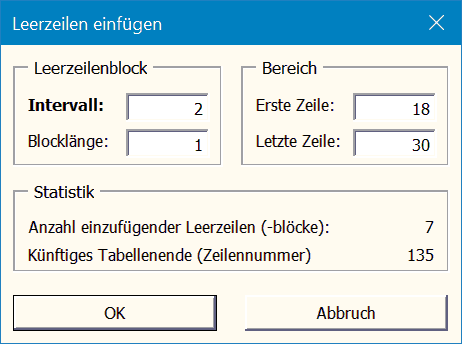

Interpolationsformel erstellen
Aufgrund der aktuellen Zellauswahl wird eine Interpolationsformel
erstellt. Die Zellauswahl muss genau 3 Zellen enthalten (in der
Abbildung rot markiert). Zwei der gewählten Zellen müssen zur gleichen
Spalte gehören und markieren Anfangs- und Endwert der bekannten
Größe (x-Wert). Die dritte Zelle muss in der Spalte der zu
interpolierenden Größe (Funktionswert f(x)) liegen. Die dazugehörigen
Anfangs- und Endwerte werden den Zellen dieser Spalte entnommen,
die in den gleichen Zeilen stehen wie die entsprechenden x-Werte. In
die dritte Zelle wird die Formel eingetragen.
Duplikate markieren
Die markierte und alle in derselben Spalte darunter (!) liegenden Zellen
werden mit einer bedingten Formatierung versehen, die mehrfach in
dieser Spalte auftretende Werte hervorhebt. Die Zelle mit dem ersten
Auftreten des gleichen Wertes wird dunkelblau hinterlegt, alle weiteren
hellblau.
Die bedingte Formatierung kann nachträglich auf dem üblichen Weg
geändert und z.B. mit der Funktion „Datenbereich Formatieren“ (siehe
Punkt 2.2.1) auf den aktuell genutzten Bereich der gesamten Spalte
übertragen werden.
Es ist nicht möglich, diese Formatierung in Zeile 1 vorzunehmen, da
sonst in einer Formel Bezug auf die nicht existierende Zeile Null
genommen werden müsste
Leerzeilen einfügen
In einem anzugebenden Zeilenintervall werden Leerzeilen bzw. Blöcke von
Leerzeilen in die aktive Tabelle eingefügt.

Editor
Der Inhalt der aktiven Tabellenzelle wird als Dateiname interpretiert und,
falls existent, in UltraEdit oder jEdit geöffnet.
Falls keiner der beiden Editoren verfügbar ist, wird die Windows-Standardanwendung des betreffenden Dateityps gestartet.
Fußzeile eintragen
Die Fußzeile wird mit folgenden Texten bzw. Feldern belegt:
· Links: “Dateiname (Tabellenname)”
· Mitte: Eintrag “FUSSZEILE_EXCEL_1” aus der Ini-Datei mit
Ortsdaten (siehe Konfiguration) · Rechts: “Seite
x von xx”
Eventuell vorhandene Formatierungen von Schriftart und Größe werden
beibehalten, sofern die Formatierung für alle Zeichen je eines der drei
Fußzeilenteile gilt.
Andernfalls wirkt das Ergebnis eher zufällig. Das liegt daran, daß die
Formatierung innerhalb der Fußzeilentexte als Zusatztext kodiert ist und es
den Aufwand nicht lohnt, alle Einzelformatierungen zu erfassen.